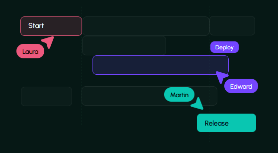

Effortlessly build advanced custom AI Agents and leverage Atlas for intelligent on- and off-chain Web3 data insights.
About
AI in Web3 is Underutilized and Complex.

Building Advanced AI Agents
Developing sophisticated AI agents is challenging and resource-intensive, often requiring a full in-house AI/ML team, advanced tools, and significant expertise—creating high barriers for individuals and smaller organizations.
Fragmented Web3 Tools
Users rely on multiple tools for on-chain research and market tracking in Web3. Making it inefficient to gather and analyze comprehensive data, and there is a lack of guidance for new users, hindering informed decision-making